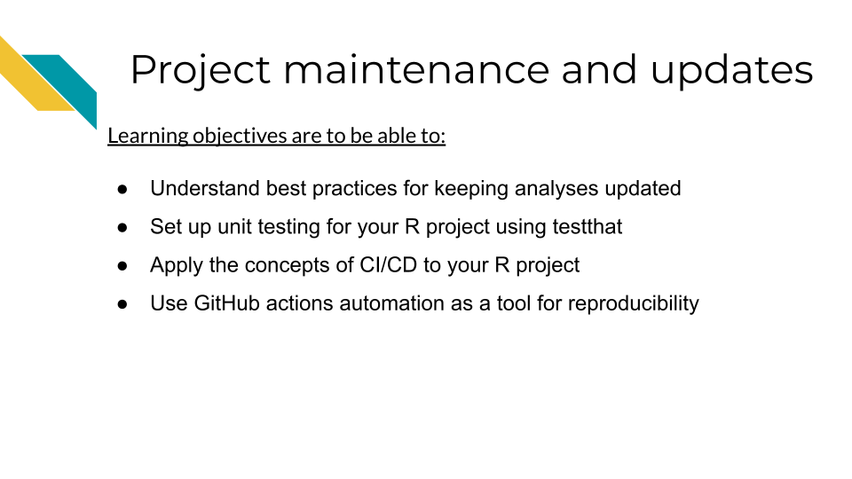
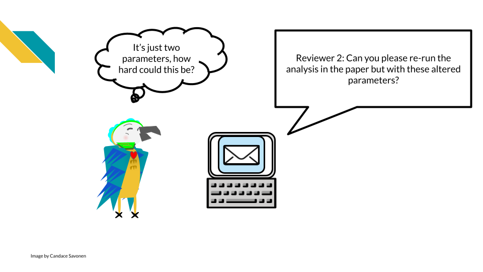
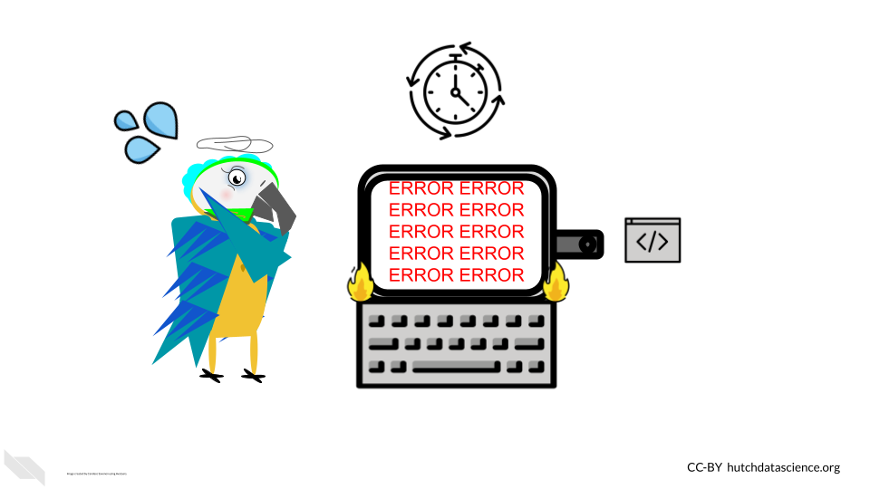
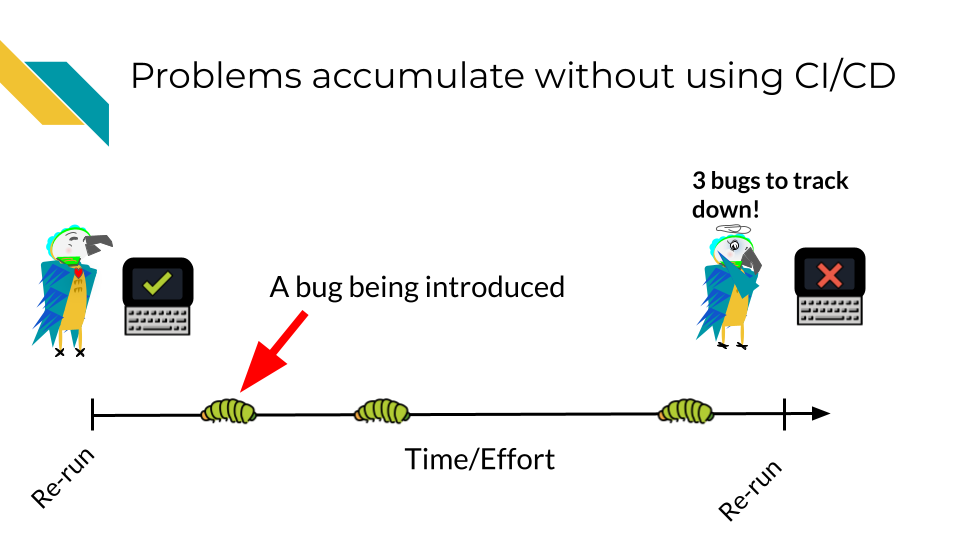
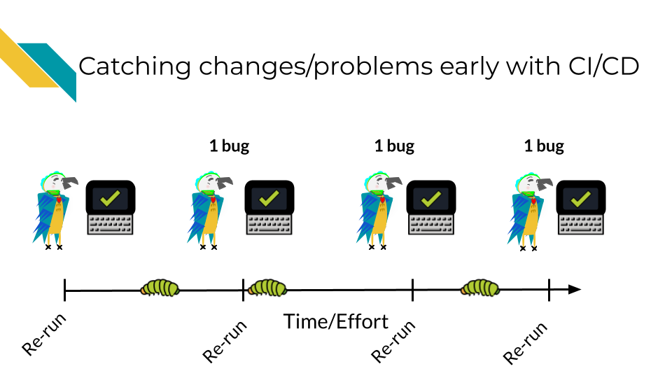
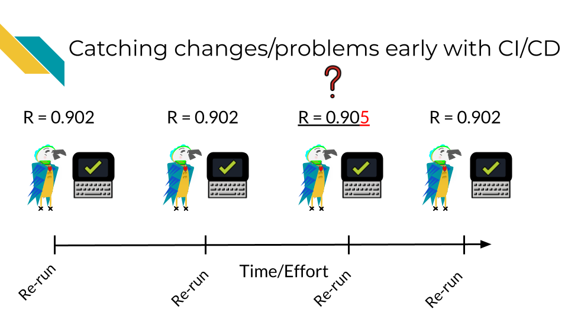
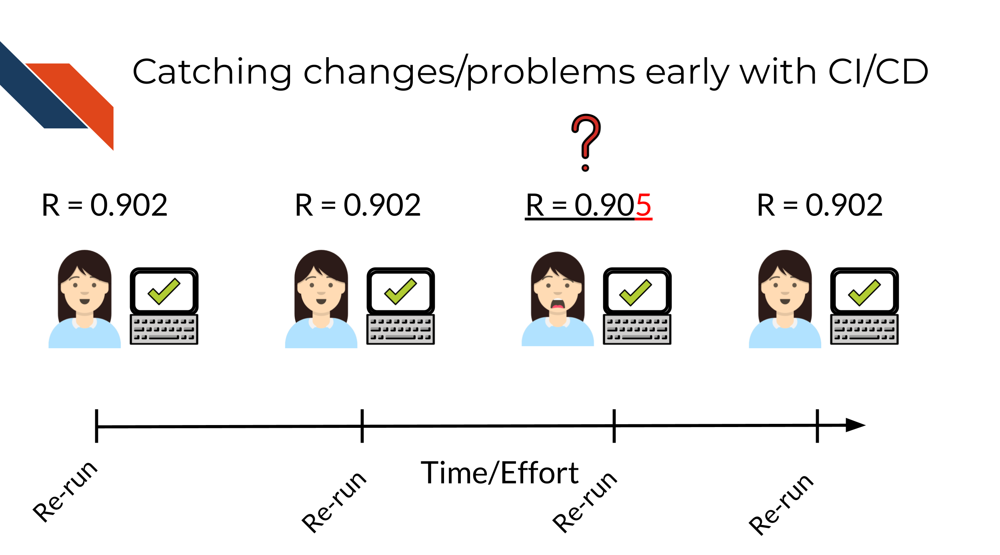

Chapter 12 Project maintenance and updates

12.1 Understand best practices for maintaining projects
Many R projects are either maintained long term or they deprecate. Many folks have many R projects over time which means keeping all your R projects maintained could easily become a time consuming endeavor!
In order to keep maintenance a priority without it using up all your time, we have a few tips to discuss. These tips will help you ease the burden of maintenance and lead to a healthier R project long term.
Building some of the following infrastructure will take a bit more time upfront, but will save you time overall:
- Have unit testing with
testthat - Use continuous deployment / continuous integration (CI/CD) principles
12.2 What is Unit Testing?
One of the most comprehensive methods for making sure your code works is building tests. Unit testing can be really straightforward to build using the testthat package. testhat works with the usethis R package so you can start by installing both of those.
install.packages(c("usethis", "testthat"))In a previous chapter we talked about making custom functions and ended up showing an example called make_shades().
To create tests for this function we can create a new file for it. We can do this by calling use_test and ideally we will call it something that relates to what function is being tested there.
usethis::use_test("make_shades")This will open up a page that looks like this. This is the template test that shows up when you make a new test. It will have an explanation of how one might test 2*2.
test_that("multiplication works", {
expect_equal(2 * 2, 4)
})Testing tips:
- A test file holds one or more test_that() tests.
- Each test describes what it’s testing: e.g. “multiplication works”.
- Each test has one or more expectations: e.g. expect_equal(2 * 2, 4).
A key to unit testing is having a proper test for every piece of functionality you have written.
This may include creating tests that cover:
- Ensuring that all the possible argument options work as expected
- Ensuring the potential outputs are the types of objects as expected
- Ensuring the outputs can work in any associated functions in a workflow
For our make_shades function we had the arguments colour, n, lighter. So we ideally would make tests that cover all the possible options for these arguments.
Here’s an annotated example for what a start to tests could look like for make_shades().
test_that("make_shades tests", {
# Running the function with varying arguments to make sure they work
# If errors are thrown this test will fail
colors_lighter <- make_shades("goldenrod", 5, lighter = TRUE)
colors_darker <- make_shades("goldenrod", 5, lighter = FALSE)
# We expect if lighter = TRUE or FALSE should change the output
expect_false(all.equal(colors_lighter, colors_darker))
# We expect output to be a vector
expect_type(colors, "vector")
# This function works only on colors so if we were worried colors
# would not be returned we could check this
real_colors <- col2rgb(colors)
# The type of returned should be a matrix too
expect_type(real_colors, "matrix")
})These are just a few examples; you could continue building tests for this function!
To read more about the details of testing we recommend this book chapter.
You can run all your tests using devtools::test() or by setting up handy automation that will run it for you. We will discuss that now!
12.3 What is Continuous integration / Continuous deployment (CI/CD)?
At the core of CI/CD is using automation to boost the reproducibility of your work!
Robots are much better at repetitive work. In other words, your human collaborator is great at many things but even your most reliable collaborator will not be as punctual as a robot who is programmed to do the job.
Let’s bring this into the terms of a very common story for science. Let’s say you are a researcher who submitted a manuscript and a reviewer comes back and asks you to rerun the analysis with a minor tweak; perhaps a parameter change.

If you developed your analysis without using reproducibility aiding practices and without automation, it is very likely that this seemingly simple task could take a lot of your time and brain power. While you might not think anything on your computer changed since you ran this analysis 6 months ago, your computing environment and the software it uses has been changing the entire time!
This kind of simple “this should be easy” situation can easily devolve into a huge rabbit hole – when you thought this analysis was basically wrapped up.

But, if you had been using the principles of CI/CD and reproducibility you may have a better chance that your analysis should still run reliably. If it doesn’t rerun reliably, you will have more previous runs and setups to pull from to help you pinpoint where the bug in your analysis rerun is coming from.
Continuous Integration/Continuous Deployment (CI/CD) is a software practice, now also used by science that automates the process of building, testing, and releasing analyses and code. CI/CD practices are often implemented by automation ‘pipelines’.

By having automation keep tabs on your development, you will be less likely to be blindsided by bugs in situations where you need to rerun your analysis (or adapt it for a new analysis!)
12.4 CI / CD Benefits
Before we discuss the concept of Continuous integration / Continuous deployment (often abbreviated CI/CD), let’s use an analogy.
Obviously what we are getting at here is that generally it is a good idea to check work along the way, instead of waiting until something is completely finished to test it.
CI / CD then is a manner of working that means we will have changes checked as they are being integrated and before the changes are deployed. This allows for continuous monitoring of the project and hopefully earlier catching of bugs!
Bugs/mistakes are an unavoidable part of software development because software developers and researchers are generally humans and humans make mistakes!

Let’s assume over the course of developing a project, bugs are introduced at a certain rate.

Without using CI/CD you may find yourself trying to fix many bugs at once! This will make the bugs harder to isolate and harder to fix. The amount of time it will take to fix 3 bugs at once may be exponentially higher than if you caught these bugs one at a time. Additionally, the longer amount of time that goes on before you catch a bug, it may be more likely it will get accidentally incorporated into your published results – this will be a lot more work for you and others to rectify.
However with CI/CD you will likely catch these bugs earlier and have an easier time fixing them before they truly run amock! A good CI/CD pipeline will help you identify these bugs early and save time and stress!

This is not only true for classic “my script won’t run” bugs but also “silent” bugs – bugs where the analysis still ran to completion but perhaps the results were slightly different.

12.4.1 Getting started with GitHub Actions
GitHub Action is one such program that can automate your CI/CD pipelines. Others are TravisCI and CircleCI.
GitHub Action is a GitHub-based automation service that allows you to implement CI/CD pipelines.
There are lots of ready made GitHub Actions for use with R code and to help you automate various tasks, such as running the code for an analysis periodically with new data. Take a look at the usethis R package library for more ways to automate your work in R.
Some packages may need some tweaking to get them to work for your project. To learn more about GitHub Actions we recommend this course.